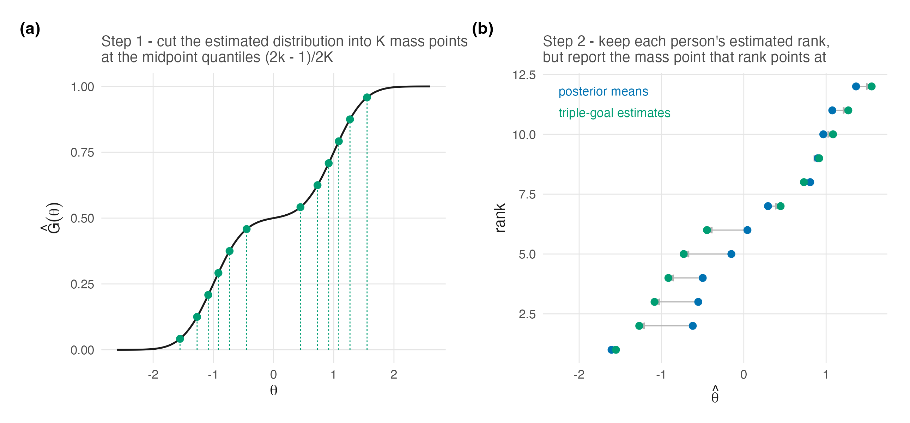
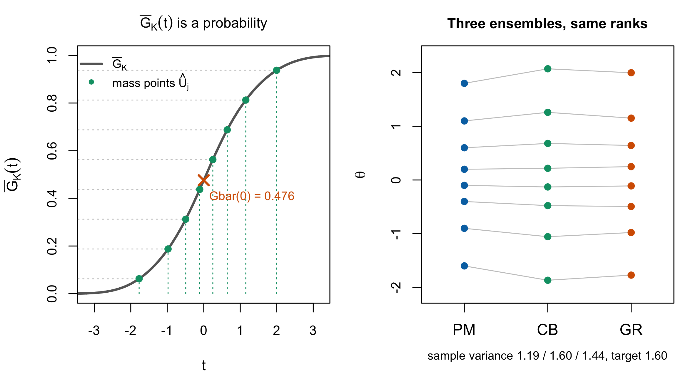

| Posterior mean \(\eta_p\) | Posterior var \(v_p\) | Posterior rank \(\bar R_p\) | Discretized \(\hat R_p\) | Mass point \(\hat U_j\) | GR estimate | CB estimate |
|---|---|---|---|---|---|---|
| -1.600 | 0.50 | 1.41 | 1 | -1.771 | -1.771 | -1.867 |
| -0.900 | 0.40 | 2.38 | 2 | -0.979 | -0.979 | -1.056 |
| -0.400 | 0.35 | 3.38 | 3 | -0.493 | -0.493 | -0.477 |
| -0.100 | 0.30 | 4.08 | 4 | -0.110 | -0.110 | -0.130 |
| 0.200 | 0.30 | 4.81 | 5 | 0.249 | 0.249 | 0.218 |
| 0.600 | 0.35 | 5.73 | 6 | 0.643 | 0.643 | 0.681 |
| 1.100 | 0.45 | 6.66 | 7 | 1.152 | 1.152 | 1.260 |
| 1.800 | 0.60 | 7.56 | 8 | 1.997 | 1.997 | 2.071 |
19 Triple-Goal Estimation
Chapter 18 showed that a moment-matching repair cannot reach shape, because it is an affine map. This chapter is the construction that can, and it works by giving up on finding a single optimum: rather than looking for one vector that minimizes three losses, Shen and Louis (1998) estimate the distribution and the ranks separately and then assemble person estimates from the two.
The chapter also resolves, completely, the ambiguity Reviewer 1 reported. Chapter 17 named \(G_N\) as the realized EDF; here the quantity the manuscript actually computes, \(\bar G_N(t)\), is exhibited and shown to be a cumulative probability — which is why it looks like neither a rank nor a trait estimate, because it is neither.
19.1 What \(\bar G_N(t)\) is
Start with the object, because everything else is built from it. Shen and Louis’s § 2.3 defines ISEL in their equation (3) and then defines its posterior target
\[ \bar G_K(t) = \operatorname{E}[G_K(t) \mid \mathbf{Y}] = \frac{1}{K}\sum_{k} \Pr(\theta_k \le t \mid Y_k), \tag{19.1}\]
the posterior expectation of the realized EDF Equation 17.3. For each fixed \(t\) it is an average of \(K\) posterior probabilities, hence a number in \([0,1]\), and as \(t\) varies it traces a distribution function on the trait scale.
ImportantR1’s confusion, resolved with a number
Reviewer 1 could not tell whether \(G_N(t)\) was “a rank estimate or a latent trait estimate,” observing that “it appears to be a mean probability of some type but then the authors describe it as a latent trait estimate.”
The reviewer’s reading is correct and the manuscript’s description is not. \(\bar G_N(t)\) is a mean probability — Equation 19.1 says so explicitly — and it is not a latent trait estimate. In Figure 19.2, computed for eight units, \(\bar G_K(0) = 0.476\): the estimated proportion of those eight people whose ability lies below zero. It is on the probability axis, not the trait axis.
What is on the trait axis are the mass points \(\hat U_j\) obtained by inverting it, and the person estimates assembled from them. The manuscript conflates the function with its inverse’s values, which is a presentational defect and not a modelling one, and one sentence fixes it: \(\bar G_N\) is the estimated EDF; \(\hat U_j = \bar G_N^{-1}\{(2j-1)/2N\}\) are the trait values; \(\theta^{\mathrm{GR}}_p = \hat U_{\hat R_p}\) is the person estimate.
19.2 The construction
Theorem 19.1 The triple-goal (GR) estimator. Restated from Shen and Louis (1998, §§ 2.1, 2.3–2.4, pp. 457–459)
Estimate the distribution. Minimize posterior expected ISEL over discrete actions with at most \(K\) mass points. The minimizer \(\hat G_K\) puts mass \(1/K\) at
\[ \hat U_j = \bar G_K^{-1}\!\left(\frac{2j-1}{2K}\right), \qquad j = 1,\dots,K . \tag{19.2}\]
Estimate the ranks. Minimize a squared-error loss on ranks, giving the discretized posterior ranks \(\hat R_k\).
Assemble. Set \(\hat\theta_k = \hat U_{\hat R_k}\).
Figure 19.1 draws the two moves on a small worked example — the distribution cut into its midpoint-quantile mass points, then the persons routed onto those points by rank.

Step 2 needs a convention when expected ranks tie. A discrete Rasch test can make tied scores—and therefore identical posteriors and expected ranks—unavoidable. Any permutation within an exact tied block has the same squared rank loss and preserves the step-1 EDF, but assigning distinct mass points by input row order would break exchangeability. The theoretical GR action used here therefore randomizes uniformly over the loss-equivalent permutations within each exact tie block. A deterministic display may use a stable refinement only after verifying that its expected ranks are distinct; the worked example below passes that check.
The estimator is named for its first two steps — \(G\) and \(R\) — and that naming is exact rather than modest. Step 3 does not optimize anything for the individual; it distributes the mass points that step 1 produced onto the people that step 2 ordered.
There is a conditional sense in which GR need not ignore coordinate squared error. Given the mass points, the permutation minimizing \(\sum_k (\hat U_{z_k} - \eta_k)^2\) pairs their increasing order with the increasing order of the posterior means. This is the same assignment as step 3 when the posterior-mean order agrees with the posterior expected-rank order. Without that rank-agreement condition, step 3 remains the rank-loss action and is not an unconditional coordinate-SEL optimum. GR gives up the freedom to choose the values; whether its rank placement is also the best coordinate-SEL placement is a separate, checkable condition.
Table 19.1 works the whole construction on eight units.

19.3 What GR achieves, and what it costs
Proposition 19.1 The GR ensemble carries the estimated EDF by construction. Restated from Shen and Louis (1998, § 2.4, p. 459)
The empirical distribution of \(\{\hat\theta_k\}\) is exactly \(\hat G_K\), the ISEL-optimal discrete estimate, because step 3 is a permutation of the mass points of \(\hat G_K\) and a permutation does not change an empirical distribution. With exact rank ties, each permitted within-block refinement is still a permutation and carries the same EDF; the person-level assignment inside that block is randomized as specified above.
This is the property Chapter 18 could not deliver. CB matches two moments of the target; GR matches the whole estimated distribution function, so any functional read off it — quantiles, the proportion beyond a cut score, modality — is read off the ISEL-optimal object rather than off a rescaled version of the wrong shape.
The cost is paid on Goal 1, and Shen and Louis quantify it exactly rather than bounding it.
Proposition 19.2 GR’s individual regret, exactly. Restated from Shen and Louis (1998, eq. 14)
Under squared-error loss the posterior regret of GR relative to the posterior means is, for the actual GR permutation,
\[ \operatorname{regret}_{\mathrm{GR}}(\mathbf{Y}) = \frac{1}{K}\sum_{k=1}^{K} \left\{\hat U_{\hat R_k} - \eta_k\right\}^2 . \tag{19.3}\]
When \(\hat R_k\) agrees with the posterior-mean ordering, as Shen and Louis assume immediately before their equation (14), this simplifies to
\[ \frac{1}{K}\sum_{j=1}^{K}\left\{\hat U_j - \eta_{(j)}\right\}^2, \tag{19.4}\]
where \(\eta_{(1)} \le \dots \le \eta_{(K)}\) are the ordered posterior means. Regret is non-negative, and it is zero only when every assigned mass point equals that person’s posterior mean.
Equation 19.3 is more useful than the inequality it implies. Under rank agreement, Equation 19.4 is the squared distance between the ISEL-optimal mass points and the ordered posterior means — that is, exactly the amount by which correcting the ensemble’s spread displaces each person from their individually optimal estimate. It is computable from quantities the analyst already has, and on the eight units of Table 19.1 it is \(0.011\) against constrained Bayes’s \(0.026\), so on this example GR pays less for its EDF repair than CB pays for its moment repair.
Three further properties, all visible in Figure 19.2.
All three ensembles induce the same ordering here, as direct computation verifies. The independent normal posteriors in this illustration have unequal variances, so their CDFs cross and they are not stochastically ordered; Shen and Louis’s Theorem 2 does not require the agreement in this particular example. The common-form Rasch result in Section 12.3.2 remains a separate stochastic-order case.
CB matches the target variance and GR does not. The target ensemble variance is \(1.60\); CB attains it exactly, by construction, and GR attains \(1.44\). That is not a defect of GR — it optimizes ISEL, not the second moment, and the discretized quantile map trades a little spread for fidelity across the whole function.
GR is not a smoothing of the posterior means. Its estimates are \(K\) points read off an estimated distribution and permuted; nothing constrains them to lie near the \(\eta_k\) except step 3’s assignment.
19.4 When GR is the wrong choice
The chapter would be dishonest without this section, and the evidence for it is published rather than argued.
Paddock et al. (2006) state the structural reason: “because triple-goal estimates rely more heavily on the entire distribution than do posterior means, they are more sensitive to misspecification of the population distribution.” GR reads its mass points off \(\bar G_K\), and \(\bar G_K\) inherits whatever the model assumed about \(G\). Paddock et al.’s defensible comparison is that GR relies more heavily on the full population distribution than posterior means do. A posterior mean reduces \(G\) to one scalar shrinkage weight only in the conjugate Gaussian working model; under a general prior or DPM it too is an integral that can depend on the full shape of \(G\).
Their simulations locate when this bites, and the answer is in this programme’s own currency. “When the data are quite informative, the GR estimates are quite robust to model misspecification… However, conclusions can be quite sensitive to misspecification of the population distribution when the data are less informative” (2006, sec. 6). Sensitivity to \(G\) is a function of how much the data say — which is Chapter 8’s reliability, and which is why the companion simulation varies it.
Two more of their findings belong here because neither gives a blanket endorsement. Under a bimodal generating distribution with informative data, their DP-1 and smoothing-by-roughening fits attained lower squared-error loss for the unit parameters but larger ISEL for \(G\) than the Gaussian and \(T_5\) choices, whereas DP-2 lowered both losses (2006, sec. 4.2.2.1). And for ranks, the losses of ML, posterior-mean and GR estimates were “very similar and indistinguishable, even when the variances of the observations are heterogeneous” (2006, sec. 4.2.2.2) — so the rank half of “GR” buys little in their setting, and the construction earns its keep on the distribution.
A fourth condition has since arrived from the real-data side, and it concerns the rank step rather than the distribution step. Across the case-study volume’s replicate pairs, GR estimates failed to reproduce within 0.10 SD of themselves on nine of 24 fits with twelve to sixteen items — and on none of 54 fits with seventeen or more, a threshold rather than a gradient, invisible to convergence diagnostics because the chains were fine (Lee 2026). The mechanism is the construction’s own: step 3 routes persons by estimated rank, ranks on short tests are dense with near-ties (Section 24.3), and a near-tie resolved differently at a new seed moves a person a whole mass point. The distribution estimate barely notices; the person estimates do. Chapter 28 reports the measurement, and the practical rider belongs here: below roughly seventeen items, GR’s person-level output should be treated as seed-sensitive even when everything else about the fit is clean.
The honest summary is that GR is the right estimator when the reported quantity is a functional of the distribution, when the data are informative enough that \(\bar G_K\) is not mostly prior, and when the model for \(G\) is flexible enough not to impose the shape the estimate is supposed to discover. Those three conditions are the reason this book’s Part V exists; the fourth is the case study’s contribution to the list.
19.5 Sources and provenance
Equation 19.1, Equation 19.2, Theorem 19.1 and Proposition 19.1 are Shen and Louis (1998, secs. 2.1, 2.3–2.4, pp. 457–459), read directly. Equation (3) defines ISEL, Theorem 1 gives the midpoint-quantile mass points, and § 2.4 gives the three-step GR method plus the optimal-permutation remark. Proposition 19.2 is their equation (14), restated with its immediately preceding rank-agreement convention made explicit; the blueprint for this chapter had it as this book’s own result, which reading the paper corrected — the exact regret is theirs and is better than the inequality this book would have proved.
Table 19.1 and Figure 19.2 are computed for this book in code/R/07-tables.R and code/R/09-figures.R from independent normal posteriors, deterministically. The verification that the worked GR estimates reproduce both forms of the regret under their stated conditions, that the expected ranks sum to \(K(K+1)/2\), and that all three ensembles induce the same ranks in this example is in code/R/15-derivation-checks.R.
The limitations in Section 19.4 are Paddock et al. (2006), read directly: the sensitivity mechanism from their abstract, the informativeness dependence from their § 6, the bimodal SEL/ISEL trade from § 4.2.2.1, and the rank indistinguishability from § 4.2.2.2. Two of the four complicate rather than support this book’s preferences and are included for that reason.
The resolution of R1’s question is this book’s, and it is a presentational recommendation for the revision rather than a modelling correction: the manuscript’s exposition conflates \(\bar G_N\) with values on the trait scale, and the three-line clarification in Section 19.1 is what the revision needs.
The reproducibility threshold in Section 19.4 is the case-study volume’s replicate-audit result, quoted at the counts and threshold it published (Lee 2026) and taken up with its design in Chapter 28. Figure 19.1 is a seeded worked illustration of Theorem 19.1’s two moves, added in this edition (code/R/22-figures-v2-concepts.R); its estimated distribution is stipulated for display and nothing quantitative rests on it.
Lee, JoonHo. 2026. Case Studies of Dirichlet Process Mixture Priors and Goal-Specific Posterior Summaries in Bayesian IRT: Thirteen Real Tests from the Item Response Warehouse. Quarto book, The University of Alabama.
Paddock, Susan M., Greg Ridgeway, Rongheng Lin, and Thomas A. Louis. 2006. “Flexible Distributions for Triple-Goal Estimates in Two-Stage Hierarchical Models.” Computational Statistics & Data Analysis 50 (11): 3243–62. https://doi.org/10.1016/j.csda.2005.05.008.
Shen, Wei, and Thomas A. Louis. 1998. “Triple-Goal Estimates in Two-Stage Hierarchical Models.” Journal of the Royal Statistical Society: Series B (Statistical Methodology) 60 (2): 455–71. https://doi.org/10.1111/1467-9868.00135.